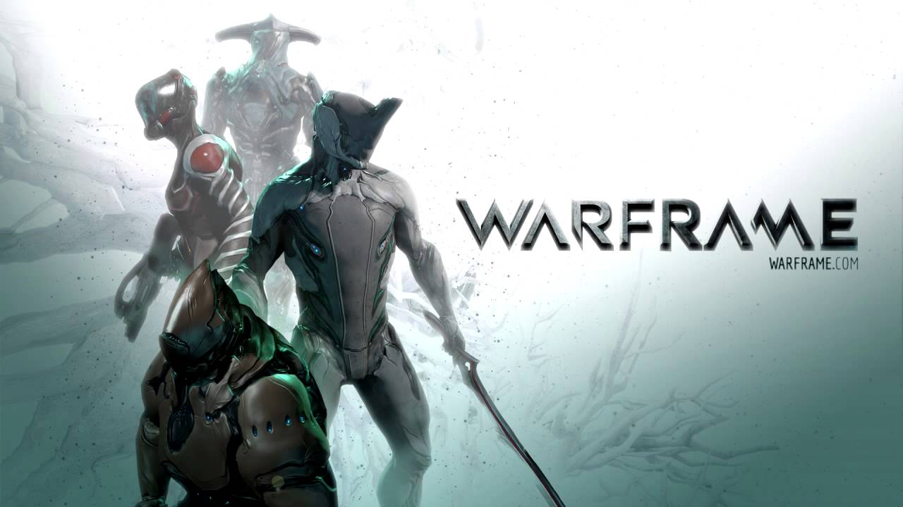

WARFRAME
Warframe is an online free-to-play cooperative third-person shooter video game developed by Digital Extremes for Microsoft Windows, PlayStation 4 and Xbox One. In Warframe, players control members of the Tenno, a race of ancient warriors who have awoken from centuries of cryosleep to find themselves at war with different factions.
Development:Digital Extremes's 2008 video game Dark Sector was originally intended to take place in a science-fiction environment in outer space, with players taking the role of a character that inhabits a sleek mechanical suit with incredible powers. However, Dark Sector was overhauled, and most of the science fiction elements scrapped. In 2012, Digital Extremes announced they were working on Warframe, which borrows heavily from the original Dark Sector concept, with character and level design as well as various names making a reappearance.
Release:Digital Extremes started the Warframe closed beta on October 24, 2012. Since then it has had several version and hotfix releases, and open beta was launched on March 25, 2013. A PlayStation 4 version was also developed, and was released at the console's launch in November 2013, while the Xbox One version of the game launched on September 2, 2014.
| Review scores | |
|---|---|
| Publication | Score |
| 6/10 | |
 |
7/10 |